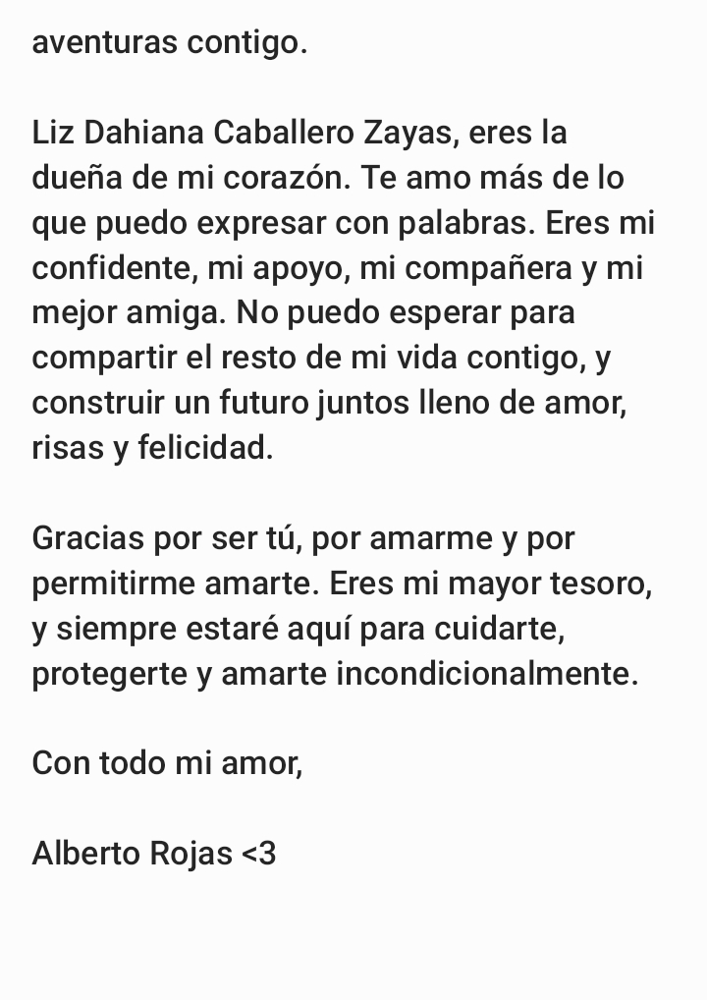
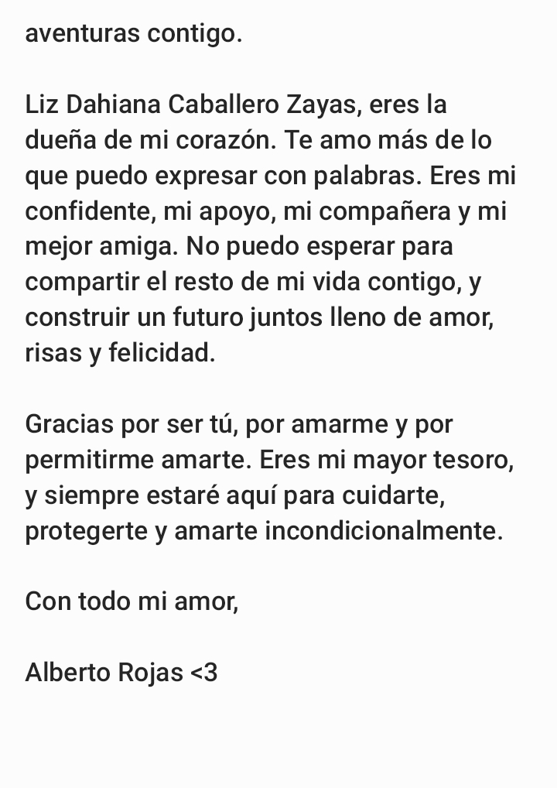

Bienvenida
¡Hola a todos!
Hoy quiero compartirles una emocionante noticia: ¡he decidido comenzar un blog personal donde estaré compartiendo fotos y cartas que he escrito para mi increíble novia! Estoy realmente emocionado de embarcarme en esta nueva aventura y tener la oportunidad de mostrarles un vistazo de nuestra hermosa historia de amor.
Para mí, el acto de escribir cartas es una forma hermosa y significativa de expresar mis sentimientos hacia mi pareja. Me permite transmitirle todo lo que está en mi corazón de una manera íntima y personal. Y ahora, al compartir algunas de estas cartas en mi blog, espero que también puedan captar un poco de la magia y el amor que compartimos juntos.
Además de las cartas, también estaré compartiendo algunas de nuestras fotos más especiales. Estas imágenes capturan momentos inolvidables en nuestra relación, desde nuestras aventuras juntos hasta los simples momentos cotidianos llenos de felicidad. Espero que al ver estas fotos, puedan sentir la alegría y el amor que nos rodea.
Mi objetivo principal al crear este blog es poder transmitir la belleza de nuestra relación y, al mismo tiempo, inspirar a otros a valorar y celebrar el amor en sus propias vidas. Creo firmemente que el amor es uno de los regalos más preciosos que podemos experimentar, y deseo compartir esa felicidad con todos ustedes.
Quiero aprovechar esta oportunidad para agradecer a mi novia por su apoyo inquebrantable y su amor incondicional. Ella es mi musa, mi inspiración y mi compañera en cada paso del camino. Sin ella, este blog no sería posible, y estoy eternamente agradecido por tenerla a mi lado.
Así que los invito a todos a visitar mi blog y unirse a nosotros en este viaje lleno de amor. Estoy seguro de que encontrarán algo especial y significativo en cada carta y en cada foto que comparto. Espero que disfruten explorando nuestra historia tanto como yo disfruto escribiéndola.
¡Gracias a todos por su apoyo y cariño!
Con amor,
Alberto Rojas.

 
